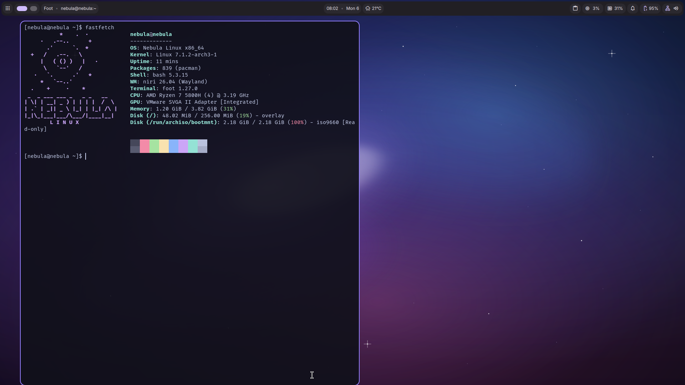
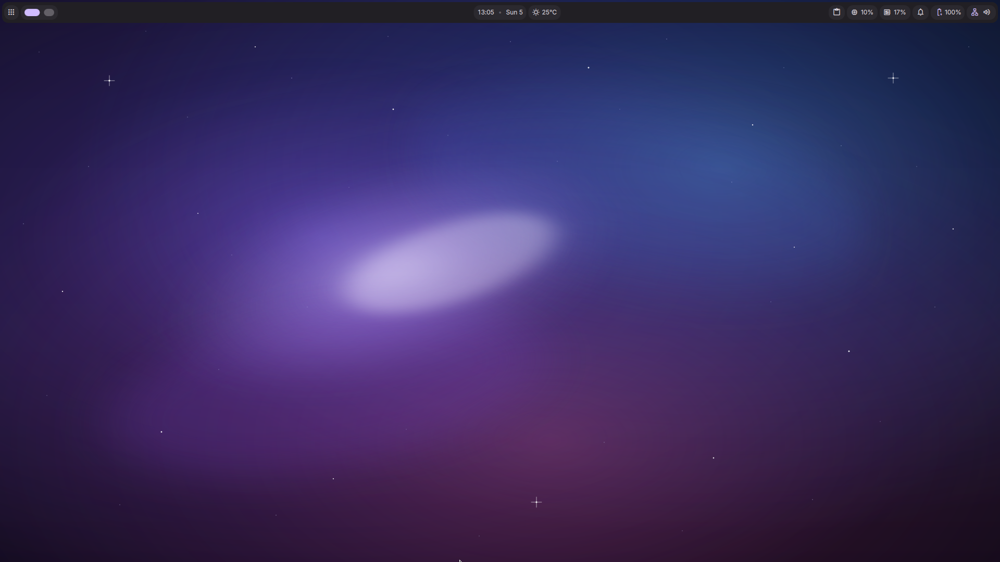
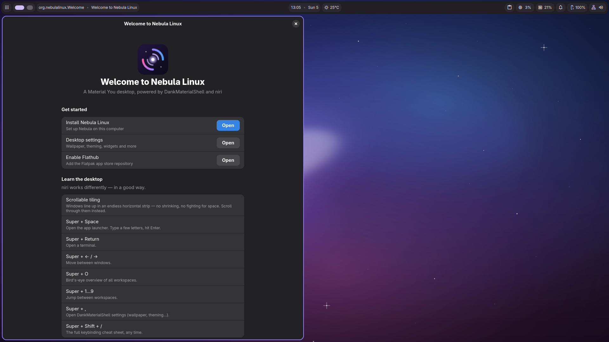
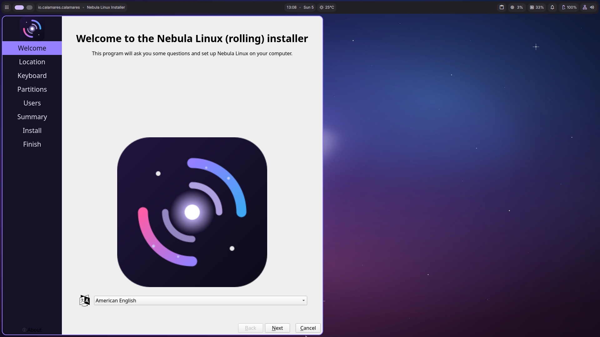
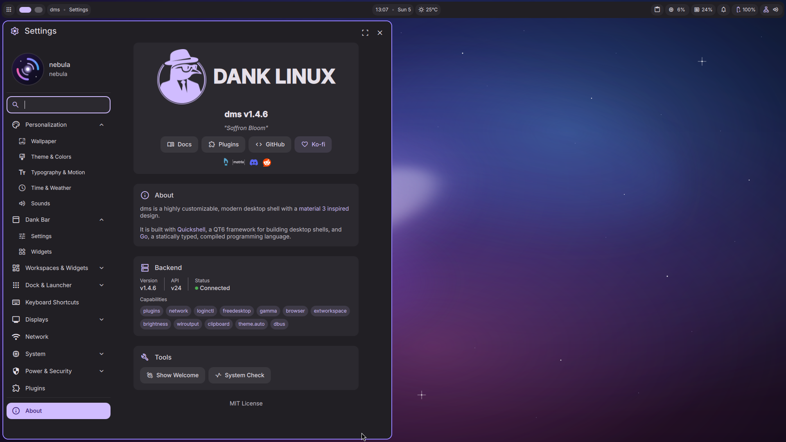
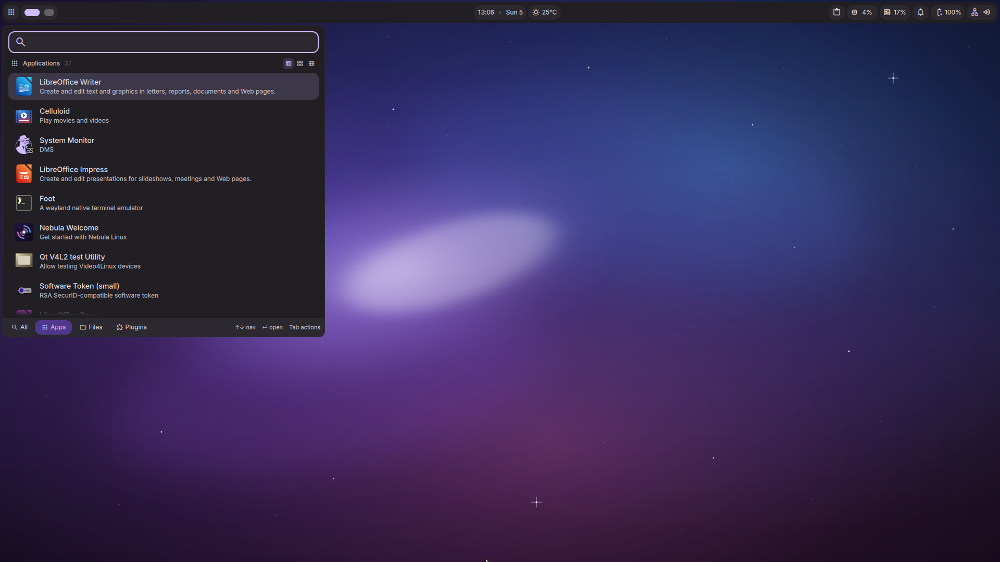
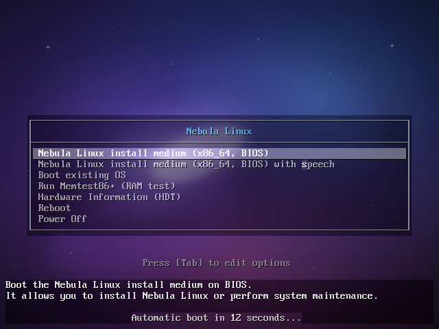

See it in Action — Debian Edition


Fast, Minimalist, and Beautiful. One distribution, two personalities — the stability of Debian with KDE Plasma 6, or the cutting edge of Arch with the Dank Linux Material desktop.

Familiar. Polished. Dependable.
Material You. Bleeding edge. Unbreakable.
nebula CLI





Change your wallpaper and the entire desktop — bar, launcher, notifications, lock screen, even GTK and Qt apps — recolors itself instantly with a matugen-generated Material 3 palette.
Installs on btrfs with snapper. Every update takes automatic before/after snapshots, and any older state is bootable straight from the GRUB menu. A rolling release you can't really break.
First boot greets you with a native onboarding app: install to disk, learn the niri workflow, enable Flathub, and grab app bundles for development, gaming or creative work.
nebula CLIOne command for system care: nebula update, nebula snapshots, nebula rollback, nebula drivers (with one-shot NVIDIA install) and nebula doctor.
Installed systems log in through the DankMaterialShell graphical greeter, and the lock screen carries your wallpaper, Material colors and avatar. Branded from power-on to desktop.
Guest tools for QEMU/KVM, VirtualBox and VMware start automatically when a hypervisor is detected — clipboard sharing and display resize just work. Great for trying before installing.
No theming homework. Debian edition ships a hand-tuned Plasma 6 Arc look; Arch edition generates a full Material 3 palette from your wallpaper with matugen — lock screen included.
Native Wayland on both editions, tuned animations, zram compressed memory, and zero bloat. Menus and windows snap open instantly.
The Arch edition installs on btrfs with automatic snapshots before every update — if anything goes wrong, boot the previous state straight from the GRUB menu.
Fast, private web browsing.
VLC or Celluloid — plays everything out of the box.
Full suite for all your documents.
One-click installs for thousands of apps.
Core Debian Trixie base, Plasma 6 integration, Custom Themes, Initial Installer.
DankMaterialShell on niri, branded Calamares, btrfs snapshot rollback, Nebula Welcome, nebula CLI, VM guest support.
Public Arch-edition ISO downloads, Native Bug Reporter, Hardware Driver Manager, Custom Nebula Icon Pack.
Final bug fixes, stable repository freeze, Official Public Launch.